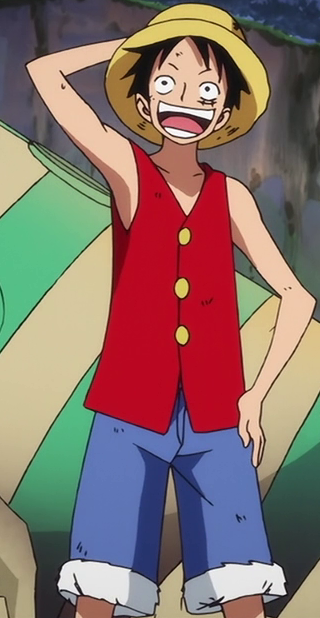
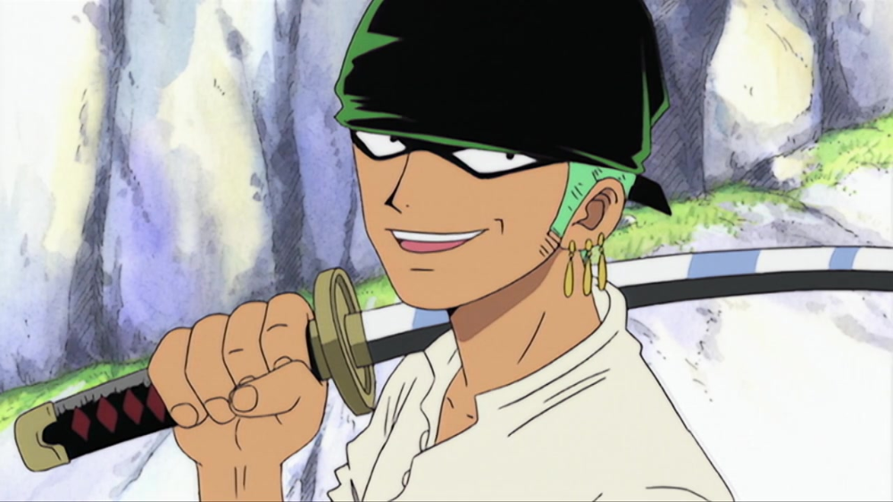
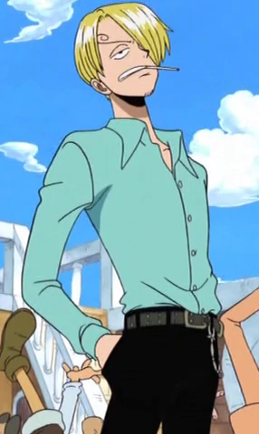

Pre-Timeskip
These are the descriptions of the three main Straw Hat Pirates pre-timeskip:
Monkey D. Luffy
"The Infamous East Blue Pirate"

Fighting Style: Devil Fruit
Devil Fruit: Gum-Gum Fruit
Abilities: Body has the properties of rubber, allowing Luffy to stretch his body.
Special Abilities: Gear Second allows Luffy to pump blood through his body at a faster rate, which allows him to go faster / Gear Third allows Luffy to blow air into his bones, which expands the affected limb to the size of a giant's limb.
Strengths: Extremely resilient to all attack other than swords or other devil fruits.
Weaknesses: Devil fruit renders him unable to swim / Swords can hurt him.
Roronoa Zoro
"East Blue Pirate Hunter"

Fighting Style: Three Sword Style
Swords: Wado Ichimonji, Sandai Kitetsu, Shusui, Yubashiri (formerly), two unnamed katana's (formerly)
Abilities: Extremely proficient in three sword style, allowing Zoro to hone the power of all three of his swords.
Special Abilities: Use of three sword style allows Zoro to use extremely fast and powerful attacks such as Three Thousand Worlds, which was used in his battle against the World's Greatest Swordsman, "Hawk-Eye" Mihawk.
Strengths: Extreme physical strength, allowing Zoro to lift things beyond any normal person / Very durable, allowing Zoro to take some powerful attacks.
Weaknesses: Zoro has a horrible sense of direction, leading to him getting lost very often.
Sanji
"Cook of the Straw Hat Pirates"

Fighting Style: Black Leg Style
Weapons: Legs
Abilities: Able to move extremely fast due to fighting style.
Special Abilities: Fighting style allow Sanji to "overheat" his legs, causing his attacks to become much more powerful and for his speed to increase.
Strengths: Very fast running speed, as well as being a great cook.
Weaknesses: Sanji needs to protect his hands from getting hurt at all times, as he needs to cook, which means he can't use his hands in combat.